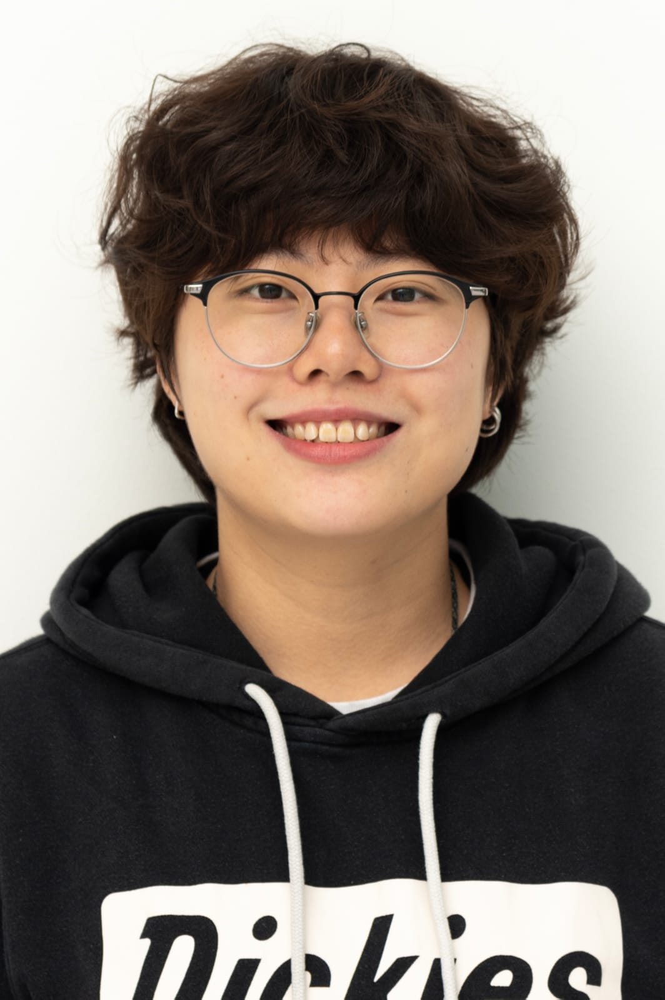
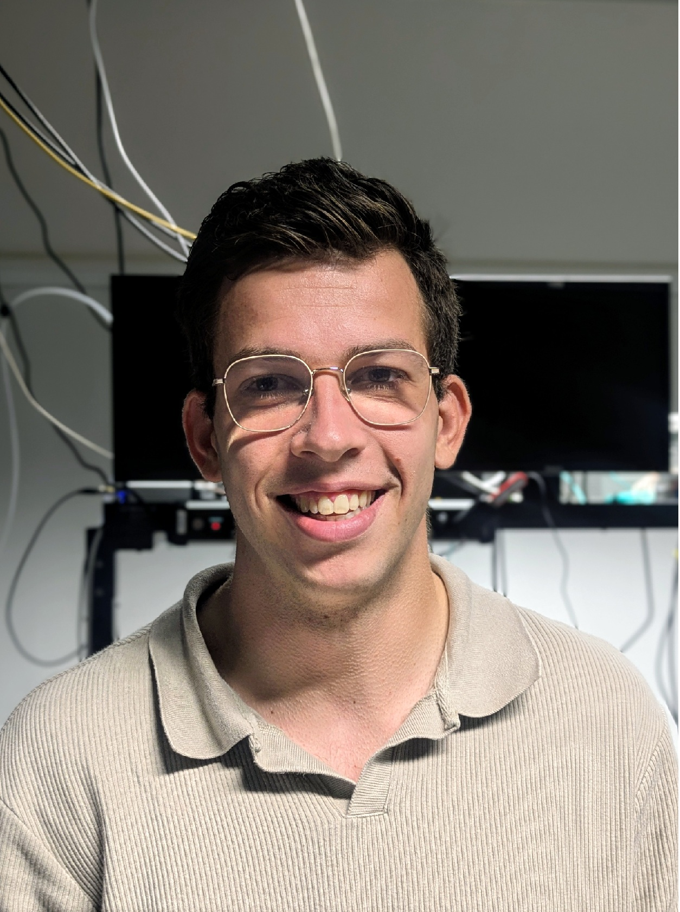

We measure complex nanoparticle populations one particle at a time.
The Nanoparticle Metrology Lab develops single-particle measurement tools for biological and industrial nanoparticles. Where standard methods average over billions of particles and wash out the differences between them, we measure each particle individually and reconstruct the full population from those individual measurements.
Our platform combines interferometric scattering microscopy, single-molecule fluorescence, microfluidics, and machine learning to profile thousands of particles across multiple physical parameters. We apply this multiparametric profiling to extracellular vesicles, viruses, and lipid nanoparticles, revealing new insights into their heterogeneity and potential for diagnostics and therapeutics.
Continue —
-
01
→
Research
Nanoparticles and the multiparametric heterogeneity that bulk methods miss.
-
02
→
Techniques
Interferometric scattering microscopy, iNTA, mass photometry, and the open-source software behind them.
-
03
→
Members
The people behind the work.
Lately —

We are part of MBx
The Molecular Biosensing group at the Department of Applied Physics develops measurement methods for molecules and particles in biological samples, with applications across diagnostics, drug delivery, and basic biology.
What we work on.
The Research page is organised around the scientific questions we pursue. For the methods themselves, see Techniques.
Multiparametric heterogeneity

Biological nanoparticles, such as extracellular vesicles, viruses, and lipid carriers, are fundamentally non-uniform. Even in a purified sample, particles vary in size, membrane composition, cargo loading, and surface charge. Standard bulk techniques like DLS or Western blots provide an "ensemble average" that masks this complexity.
The most biologically significant or diagnostically relevant particles are often outliers, completely obscured by the population average.
Our platform shifts the focus from the population to the individual. By correlating multiple physical properties for every particle across a library of thousands, we resolve distinct subpopulations. This multiparametric approach allows us to see distributions that single-property measurements simply cannot detect.
Extracellular vesicles for liquid biopsy

Tumor-derived extracellular vesicles (EVs) carry proteomic and genomic signatures of their origin, making them ideal candidates for non-invasive diagnostics. However these vesicles are relatively rare and one needs to find them a vast background of "healthy" EVs and lipoproteins.
We characterize the joint distribution of size, refractive index, surface charge and surface markers to bypass the limitations of single-marker searches. This high-dimensional profiling allows us to identify specific disease-associated fingerprints that are lost in conventional assays.
The plot shows the iNTA measurement of EVs and lipoproteins from a patient sample, highlighting how they could be differentiated by their refractive index. You can find the paper here.
Lipid nanoparticles & RNA delivery

Lipid Nanoparticles (LNPs) are the primary vehicle for mRNA delivery, but unlike viral capsids, they are highly polymorphic. Their size, internal morphology, and encapsulation efficiency vary significantly based on the self-assembly conditions during mixing.
Quantifying the "loading state" of an LNP is notoriously difficult because size does not always correlate with cargo. We use single-particle refractive index measurements to determine the internal density of individual LNPs. This enables us to resolve the ratio of empty to loaded particles in real-time, providing a window into the stochastic nature of LNP assembly and its impact on delivery efficacy.
From measurement to sorting

Characterization is only the first half of the challenge. The ultimate goal is the physical isolation of the rare particles identified by our sensors. We are extending our platform to include active sorting, using real-time single-particle readouts to gate and collect specific subpopulations for downstream characterization or therapeutic use.
We are building a label-free workflow that moves from population characterization to subpopulation isolation on a single instrument.
How we measure.
Single-particle, label-free metrology in solution and at surfaces. Interferometric scattering is the main principle; iNTA and mass photometry are the two implementations that we use.

— The iSCAT setup.
iSCAT
Interferometric scattering microscopy is the method we use for label-free, high-sensitivity imaging. By mixing the light scattered by a nanoparticle with a reference beam reflected from the sample coverglass, iSCAT achieves the signal-to-noise ratio necessary to detect subwavelength objects. We can use iSCAT not just for tracking, but for observing single-particle binding kinetics, dynamic surface interactions, and characterising particles that are fixed or moving along a surface, as well as for imaging.

Mass photometry
Mass photometry applies interferometric scattering principles to measure the molecular mass of single biomolecules, proteins, and complexes in solution. As individual molecules bind to a glass surface, they produce discrete changes in scattering contrast that are directly proportional to their mass. This provides a rapid, label-free readout of molecular weight distributions, allowing us to accurately assess sample purity, oligomeric states, and complex assembly at the single-particle level.
Other techniques in the lab
Alongside these core label-free methods, the lab uses single-molecule fluorescence microscopy and has access to an Atomic Force Microscope (AFM).
Tools we love
We develop and maintain our own internal analysis pipelines, but we also rely on (and recommend) several excellent open-source tools.
Collaborate with us
We welcome collaborations, academic and industrial, where single-particle metrology can address a measurement gap. If you have a population whose heterogeneity matters and bulk methods aren't telling you enough, get in touch via the Contact page or write to Anna at a.kashkanova@tue.nl.
What we write.
Our publications are catalogued on Google Scholar and updated automatically. We try to keep them updated here as well.
View on Google Scholar →The people behind the work.


Anna D. Kashkanova
Hi! I am Anna. I lead the Nanoparticle Metrology Lab, driven by a fascination with measuring small things precisely. My background spans quantum optomechanics at Yale, where I measured tiny vibrations in superfluid helium in the lab of Jack Harris, to developing interferometric scattering microscopy at the lab of Vahid Sandoghdar at the Max Planck Institute for the Science of Light.
I co-invented iNTA (Interferometric Nanoparticle Tracking Analysis), a technique that allows for the simultaneous measurement of size and refractive index for individual particles in solution. This work was recognised in 2025 with the Berthold Leibinger Innovation Prize. At TU/e, my group focuses on resolving the multiparametric heterogeneity of biological and industrial nanoparticles to find the "rare and interesting" particles that bulk methods miss.
Lab Members

Hannarae Lee
PhD studentHi! I am Hannarae, a PhD candidate in Applied Physics at TU/e. My research focuses on developing optical methods for characterizing individual nanoparticles, particularly using interferometric nanoparticle tracking analysis (iNTA), an iSCAT-based technique. I am interested in combining advanced microscopy, fluorescence, and fluidics to explore heterogeneity at the single-particle level.

Hi! I am Daan, a Master’s student in Applied Physics at TU/e. After completing my Bachelor’s at TU/e, I continued with the Nano, Quantum, and Photonics track, where I developed a strong interest in nanoscale physics and photonic measurement techniques. During my graduation project within the Nanoparticle Metrology Lab, I focus on Mass Photometry (MP). My work explores how this technique can be applied and potentially combined with plasmonics to improve the detection and analysis of individual nanoparticles.
Recently —
A reverse-chronological feed. The two or three most recent entries also surface on the home page.
-
March 2026New member
Welcoming Daan Linders to the lab
Daan Linders joined the lab this week as a MSc student co-supervised with Peter Zijlstra. Daan will focus on enhancing iSCAT sensitivity using plasmonic nanoparticles. Welcome!
-
January 2026New member
Welcoming Hannarae Lee to the lab
Hannarae Lee joined the lab this week as a PhD student. She comes from Max Planck Institute for the Science of Light where she worked on combining iNTA with single molecule fluorescence microscopy. Hannarae will continue developing these techniques in our lab. Welcome!
-
November 2025New lab!
Nanoparticle Metrology Lab Opens
The Nanoparticle Metrology Lab officially opened in November 2025 at the Molecular Bionsensing Group at Eindhoven University of Technology.
Get in touch.
FLUX 4.102
Eindhoven University of Technology
De Groene Loper 19
5612 AP Eindhoven, Netherlands
a.kashkanova@tue.nl